Planten in mei 2025
juni 2019 | maart 2020 | mei 2020 | juli 2020 | mei 2021 | juni 2021 | september 2023 | mei 2025

Ik moet daar heel eerlijk in zijn: ik voelde mij vorig jaar en het jaar daarvoor eigenlijk te slecht om in dingen in den hof te doen. Ik had daar dan lafgewijs een draai aan gegeven van “ik ga eens een tijd kijken wat pakt en wat niet pakt”, maar dat heeft eigenlijk niet zo hard goed gewerkt: een hof die maar minimaal onderhouden wordt, en vooral een hof waar het zó al moeilijk is om dingen te laten groeien, dat komt niet echt goed.
Dus vandejaar dan maar een inhaalbeweging. Ik ga snoeien, en bemesten, en ik heb al dingen bijgeplant.
| Naam | in 't Latijns | # | |
|---|---|---|---|
| A | klimroos | Rosa "guirlande d'amour’ | 1 |
| B | waterwilg | Salix caprea | 1 |
| C | klokjesbloem | campanula latifolia ‘Alba’ | 3 |
| D | mannetjesvaren | Dryopteris felix-mas | 2 |
| E | wilg | Salix sp.? | 1 |
| F | Japanse zegge | Carex morrowii ‘goldband’ | 2 |
| G | vlinderstruik | Buddleja davidii | 2 |
| H | prachtriet | Miscanthus sinensis ‘Ferner oster‘ | 3 |
| J | lavendel | Lavendula angustifilia ‘Alba’ | 2 |
| K | salie | Salvia | 2 |
| L | rozemarijn | Rosemarinus | 3 |
| M | tijm | Thymus | 2 |
| N | oregano | Oregano vulgare | 2 |
| P | schoenlappersplant | Bergenia cordifolia | 5 |
| Q | bloedooievaarsbek | Geranium sanguineum | 15 |
| R | Japanse esdoorn | Acer palmatum dissectum | 1 |
| S | stekelnootje | Acaena buchananii | 30 |
| T | witte regen | Wisteria floribunda ‘Alba’ | 1 |
| U | vuurdoorn | Pyracantha coccinea ‘Orange glow’ | 1 |
| W | geitenbaard | Aruncus dioicus | 3 |
| X | clematis | Clematis armandii ‘Apple blossom’ | 3 |
| & | vlambloem | Phlox subulata ‘Purple Beauty’ | 5 |
| @ | bieslook | Allium schoenoprasum | 3 |
| * | marjolein | Origanum majorana | 1 |
| + | muurleeuwenbek | Cymbalaria muralis | ?? |
| Þ | munt | Mentha sp. | 4 |
| 1 | citroentijm | Thymus citriodorus | 2 |
| 1 | blauwe grondkruiper | Isotoma fluviatilis | 4 |
| 1 | mazus | Mazus reptans | 6 |
| 1 | vetmuur | Sagina subulata | 4 |